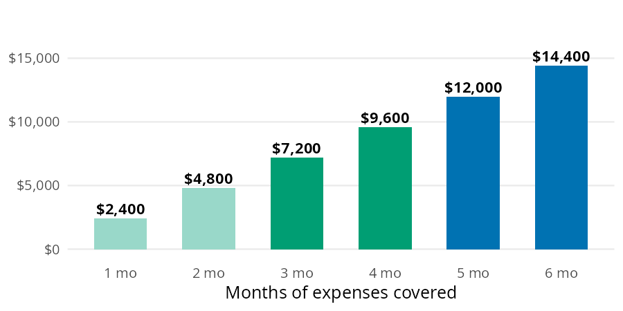
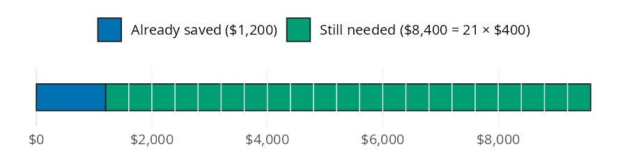

target_3 <- emergency_fund_target(monthly_expenses = 2400, months = 3)
target_6 <- emergency_fund_target(monthly_expenses = 2400, months = 6)
target_3
#> [1] 7200
target_6
#> [1] 14400An emergency fund is cash set aside so a car repair or a job loss doesn’t end up on a credit card. Building one comes down to four questions. How big should the fund be, and how long will it take to fill? How much should you save each month to finish by a deadline, and what does the fund earn in a savings account? perfinr answers them with emergency_fund_target(), months_to_ef_goal(), monthly_contribution_needed(), and ef_growth(). The examples below use the numbers from the Emergency Fund chapter of the book, where each formula is built from scratch.
The emergency fund functions
Each function answers one of the four questions:
| Function | Returns | Units |
|---|---|---|
emergency_fund_target() |
target balance | dollars |
months_to_ef_goal() |
months until the target is met, rounded up | whole months |
monthly_contribution_needed() |
monthly savings needed to meet a deadline, rounded up | whole dollars |
ef_growth() |
balance after interest | dollars |
All four are vectorized. The apy argument in ef_growth() follows the decimal convention from perfinr, so 0.04 is 4%.
How big should the fund be?
The standard target is 3 to 6 months of essential expenses: housing, groceries, utilities, transportation, health insurance, and minimum debt payments. Dining out and subscriptions don’t count, because those are the first things to go in a real emergency. The book’s example is a first job with $2,400 a month in essential expenses.
Each bar below is the one before it plus one more month of expenses.

emergency_fund_target() multiplies monthly expenses by months (3 by default). The code below computes both ends of the standard range:
The range runs from $7,200 to $14,400. A stable salary with good insurance sits near the low end; variable income or dependents push toward the high end. The rest of the book’s examples split the difference at 4 months:
target <- emergency_fund_target(monthly_expenses = 2400, months = 4)
target
#> [1] 9600How long will it take to fill?
Most people don’t start from zero. Say $1,200 is already saved toward the 4 month target, and $400 goes into the fund each month.
Think of the target as one bar. The saved part is already filled in, and the gap is cut into $400 slices; counting the slices gives the number of months.

months_to_ef_goal() subtracts the current balance from the target and divides the gap by the monthly contribution:
saved <- 1200
months_needed <- months_to_ef_goal(
target = target,
current_balance = saved,
monthly_contribution = 400
)
months_needed
#> [1] 21The $8,400 gap takes 21 months, or about 1.8 years. The result is rounded up to whole months, because a partial month still means one more transfer.
How much should you save to meet a deadline?
Now flip the question. The target is still $9,600 with $1,200 saved, but the goal is to finish in 18 months.
This time the number of slices is fixed at one per month. The question is how wide each slice has to be.

monthly_contribution_needed() divides the same gap by the number of months instead:
deadline <- 18
contribution <- monthly_contribution_needed(
target = target,
current_balance = saved,
months = deadline
)
contribution
#> [1] 467Saving $467 a month closes the gap in 18 months. The function rounds up to the next whole dollar, so the payments add up to $8,406: enough to cover the gap with $6 to spare.
What does the fund earn while it sits?
A high yield savings account (HYSA) pays interest on the fund. Savings accounts advertise an APY (annual percentage yield), which is what the money earns in a year with monthly compounding already included. A higher APY means the fund grows faster. The book’s example leaves a full $9,600 fund untouched for 12 months at 4% APY, close to what top HYSAs paid in late 2026.
The bar below shows the balance after a year: the original deposit, plus a thin slice of interest on the end.

ef_growth() multiplies the balance by (1 + apy) once per year, using a fraction of a year for partial periods:
grown <- ef_growth(balance = target, apy = 0.04, months = 12)
grown
#> [1] 9984The fund grows to $9,984, which is $384 of interest. That won’t change the timeline much, but it can cover a small car repair without touching the fund itself.
Variations
The book’s build chart compares three monthly contributions toward the same $9,600 target, starting from an empty account.

Because months_to_ef_goal() is vectorized, the whole chart is one call:
build <- data.frame(
monthly = c(200, 400, 600),
months = months_to_ef_goal(
target = target,
current_balance = 0,
monthly_contribution = c(200, 400, 600)
)
)
build
#> monthly months
#> 1 200 48
#> 2 400 24
#> 3 600 16Doubling the contribution from $200 to $400 cuts the timeline from 48 months to 24, and $600 gets there in 16.
Longer deadlines mean smaller payments
The same comparison works in reverse. The code below finds the monthly amount needed to close the $8,400 gap in one, one and a half, or two years:
deadlines <- data.frame(
months = c(12, 18, 24),
monthly = monthly_contribution_needed(
target = target,
current_balance = saved,
months = c(12, 18, 24)
)
)
deadlines
#> months monthly
#> 1 12 700
#> 2 18 467
#> 3 24 350Stretching the deadline from one year to two drops the monthly amount from $700 to $350.
What these functions leave out
emergency_fund_target()doesn’t choose the number of months for you. The default of 3 is the low end of the range, so pass a largermonthsfor variable income or dependents.months_to_ef_goal()andmonthly_contribution_needed()ignore interest, so they slightly overstate the time and money needed when the fund sits in a HYSA. Both round up and return 0 when the balance already meets the target.monthly_contributionandmonthsmust be greater than 0. A zero stops with an error instead of returningInf.ef_growth()assumes the APY stays fixed and nothing goes in or out during the period. Pass the APY as a decimal (0.04), not a percent (4).
Putting it together
The book’s order matters here. A $1,000 starter fund comes first, then high interest debt (see Managing Debt), and then the full fund. The scenario below picks up at the last step: $2,400 a month in essential expenses, a 4 month target, $1,200 already saved, and an 18 month deadline. percent_of_income() from Budgeting shows how much of a $3,200 take home paycheck the plan uses.
plan_target <- emergency_fund_target(monthly_expenses = 2400, months = 4)
plan_monthly <- monthly_contribution_needed(
target = plan_target,
current_balance = 1200,
months = 18
)
plan_months <- months_to_ef_goal(
target = plan_target,
current_balance = 1200,
monthly_contribution = plan_monthly
)
plan_share <- percent_of_income(expense = plan_monthly, income = 3200)
plan_interest <- ef_growth(balance = plan_target, apy = 0.04, months = 12) - plan_target
data.frame(
step = c("target", "monthly contribution", "months to goal",
"percent of take home pay", "first year of interest"),
value = round(c(plan_target, plan_monthly, plan_months, plan_share, plan_interest), 1)
)
#> step value
#> 1 target 9600.0
#> 2 monthly contribution 467.0
#> 3 months to goal 18.0
#> 4 percent of take home pay 14.6
#> 5 first year of interest 384.0Saving $467 a month takes 14.6% of the paycheck. Feeding that contribution back into months_to_ef_goal() returns 18 months, which confirms the plan meets the deadline. Once the fund is full, a year in a HYSA adds $384 without any new deposits. Automating Savings covers setting up the monthly transfer, and High-Yield Savings Accounts covers choosing the account.
Recap
An emergency fund comes down to four numbers. They are the target, the months to reach it, the monthly amount a deadline requires, and the interest earned along the way. emergency_fund_target(), months_to_ef_goal(), monthly_contribution_needed(), and ef_growth() compute each one. All four accept vectors, so comparing contributions or deadlines takes a single call.
- Emergency Fund in Personal Finance: a field manual
emergency_fund_target()months_to_ef_goal()monthly_contribution_needed()ef_growth()